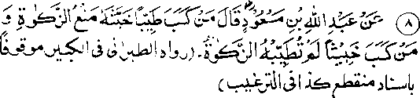

Chapter Five · Section (b): Ahadith threatening punishment for non-payment of Zakaat
6. Unlawful property cannot be purified by paying Zakaat

Hadith 8
Abdullah bin Mas'ud Radhiallaho anho says, "He who acquires pure property (by lawful or ‘Halaal’ means) but does not pay Zakaat, makes his property impure and he who acquires impure property (by unlawful or ‘Haraam’ means) and spends some of it as Zakaat cannot thus purify his property."
Note: What a severe threat for those who neglect to pay Zakaat! The entire property acquired by untiring efforts and hard labour, through lawful (Halaal) means, becomes impure by a slight act of niggardliness on the part of its owner and negligence in paying Zakaat!
In a Hadith Rasulullah Sallallaho alaihe wasallam has been reported as saying: "He who acquires property by unlawful (Haraam) means, and then gives it as Sadaqah shall receive no reward for it and will face the evil consequence of earning it unlawfully". (Targheeb). Thus, he will suffer the evil influence of unlawful earnings and receive no blessings for giving Sadaqah.